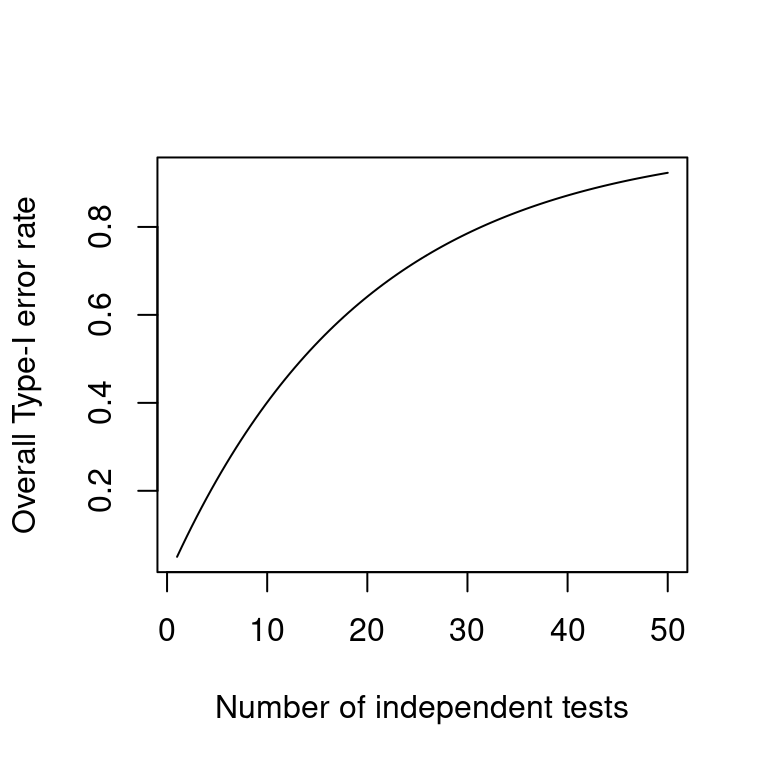

On correcting for multiple comparisons: Five scenarios
significance
power
multiple comparisons
Daniël Lakens recently blogged about a topic that crops up every now and then: Do you need to correct your p-values when you’ve run several significance tests? The blog post is worth a read, and I feel this quote sums it up well:
We … need to make a statement about which tests relate to a single theoretical inference, which depends on the theoretical question. I believe many of the problems researchers have in deciding how to correct for multiple comparisons is actually a problem in deciding what their theoretical question is.
I think so, too, which is why in this blog post, I present five scenarios and discuss how I feel about correcting for multiple comparisons in each of them.
The multiple comparisons problem
In case the phrase “multiple comparisons” doesn’t ring a bell, I’ll give a rundown of what’s involved. If you run a significance test, you accept a 5% risk of finding a significant result if, in fact, no real pattern exists. This is referred to as a “Type-I error”, a “false positive” or a “false alarm”. The 5% figure itself is a matter of convention: you could decide to accept a lower risk of finding something that doesn’t exist, but then there’s a lower chance of finding true relationships.
But let’s say you run two significance tests (on unrelated data). For each of the tests, you still accept a 5% risk of finding a false positive. That is, if no real relationship existed in the data, your first test has a 5% chance of returning a positive result, and so does your second test. But if you consider the two tests simultaneously, your chances of any test returning a positive result wouldn’t be 5% but 9.75%: in 5% of cases, the first test will be positive; in the remaining 95% of cases, the second test will sometimes be positive. The graph below shows how the total (“familywise”) Type-I error rate increases as the number of tests increases.
This increase in overall Type-I error rate is a problem if you run several tests, find any positive result, and interpret that result as though your chance of finding it by accident were 5%. There exist several approaches to solve this “multiple comparisons” problem which involve recalibrating the Type-I error rate of each single test so that the overall Type-I error rate is lowered to 5%. In what follows, I’m not going to discuss these approaches, as I will instead argue that the multiple comparisons problem can often be avoided.
Five scenarios
I’m going to discuss five scenarios and examine whether they present a multiple comparisons problem. The scenarios are not exhausitive, but they should cover a fair range of situations in which researchers are in doubt as to whether they should correct for multiple comparisons. For all five scenarios, I’ll make a couple of crucial assumptions, all of which are variations on the same theme:
- No selective reporting. Whichever tests you set out to run were ran and are reported.
- No data snooping. All tests you ran were decided on before seeing the data; you’ve not looked at interesting patterns in the data and then decided to formally test for their existence using those same data. More subtly, you didn’t base your decisions about removing outliers, combining variables etc. on the data at hand.
- No post-hoc hypothesising passed off for a priori predictions (HARKing). What you report to have been your prediction before you collected the data actually was your prediction before seeing the data.
What this boils down to is that you had a specific idea of what to test in your study, then tested it, and then reported what you tested. You may think that all of these assumptions hold true for your own research, but if you try to pre-register your next study, you may be surprised at how many decisions you take only after seeing the data first (I was!).
Scenario 1: ‘Differences exist’.
Scenario: You want to investigate whether the font a text is written in affects readers’ comprehension of the text. You devise a reading comprehension task and prepare six versions of the target text: one is printed in Arial, one in Times, one in Courier, one in Helvetica, one in Gentium, and one in LM mono. You have no particular expectation about which fonts will hamper readers’ understanding of the text and which fonts will enhance it. Participants are randomly assigned to one of the six versions, and the outcome measure is their performance on the comprehension task.
Comment: With one outcome (dependent) variable and a predictor (independent) variable with six levels, you could run 15 t-tests: Arial vs. Times, Arial vs. Courier, Times vs. Courier etc. In that case, multiple comparisons would be a problem. But the problem is easily avoided if you analyse the data in one model, though the choice of the model could be a matter of discussion:
- If your precise research question is “Is readers’ comprehension of a text different depending on whether the text is written in Arial, Times, Courier, Helvetica, Gentium or LM mono?”, then a simple one-way ANOVA with text font as the independent variable gives you a single F-test that you can use to answer your research question. Since you run one significance test to answer one research question, no multiple comparisons are involved.
- If your precise research question is “Is readers’ comprehension of a text different depending on the font the text is written in?”, and your choice of fonts in the experiment is just a selection of possible fonts, then it seems more appropriate to model text font as a random effect. You could then test if the random effect for text font represents a significant improvement over a null model (Faraway recommends parametric bootstrapping for this), and you’d again have one significance test for one research question, and no multiple comparisons.
In both cases, the multiple comparisons problem disappears once you align the significance test with your research question.
Incidentally, this scenario concerned mean differences between groups, but a similar logic applies when you’re interested in correlations between variables. If you collect, say, five variables and your research question is “Are any of these variables correlated with one another?”, then you could run 10 bivariate correlation tests. In this case, a correction for multiple comparisons would be necessary. But it may be better to tailor the test to the research question and test for all correlations simultaneously.
Scenario 2: One comparison is critical.
Scenario: You want to investigate whether a moderate intake of alcohol boosts learners’ fluency in the L2. Participants are randomly assigned to one of three groups and drink a pint of (real) beer, alcohol-free beer or water. They then describe a video clip in the L2, and the number of syllables per minute is counted for each participant.
Comment: In principle, three comparisons could be carried out (beer vs. alcohol-free, beer vs. water, alcohol-free vs. water), and at first blush one might want to correct for multiple comparisons. However, the alcohol-free vs. water comparison is irrelevant for the research question (which concerns the intake of actual alcohol). Furthermore, the beer vs. water comparison is a much less stringent test of the researcher’s hypothesis than the beer vs. alcohol-free comparison as it confounds ‘intake of alcohol’ with ‘assumed intake of alcohol’ such that differences between the beer and water groups could come about due to a placebo effect.
For these reasons, I don’t think correcting for multiple comparisons is necessary here as – again – no multiple comparisons are needed for testing the researcher’s hypothesis: comparing the beer and alcohol-free groups suffices. The additional alcohol-free vs. water comparison would be useful to test for the different hypothesis that assumed intake of alcohol influences L2 fluency, but I don’t think this should affect the way the first hypothesis should be tested.
Scenario 3: Different theories are subjected to one different test each.
Scenario: Same as Scenario 2, only this time you’re interested in the effects on fluency of (a) actual intake of alcohol and (b) perceived intake of alcohol.
Comment: Out of the three possible tests (beer vs. alcohol-free, beer vs. water, alcohol-free vs. water), only two are relevant. The beer vs. alcohol-free comparison addresses the first research question; the alcohol-free vs. water comparison addresses the second one. If you find a positive result for the first comparison, you’d tentatively conclude that the actual intake of alcohol affected fluency. If you find a positive result for the second comparison, you’d tentatively conclude that the perceived intake of alcohol affected fluency. No correction for multiple comparisons is needed as you have one significance test for each research question.
Scenario 4: Theory survives if any out of a number of possible tests is positive.
Scenario: A variation on Scenario 2. You want to investigate whether a moderate intake of alcohol affects learners’ L2 behaviour. The theory behind the study predicts that a moderate of intake of alcohol does affect learners’ L2 behavior, but nothing more specific than that. Participants are randomly assigned to one of two groups and drink a pint of (real) or alcohol-free beer. They then describe a video clip in the L2. You measure several outcome variables:
- fluency: the number of syllables per minute is counted for each participant;
- lexical diversity: the number of different words divided by total number of words;
- syntactic complexity: the number of clauses per T-unit.
Comment: The first thing to note is that the research question is pretty vague as the theory behind it is rather non-committal. With this vague a theory, multiple comparisons are an issue if you’d run three separate tests and conclude from any one positive result that your theory had been vindicated. In such cases, it may be more appropriate to try to align the significance test with the vague theory and analyse fluency, lexical diversity and syntactic complexity in one multivariate model instead.
Another possibility may be to try to adopt (a) more precise theory (theories) before the start of the study, but this would put us either in Scenario 3 (separate theories) or in Scenario 5 (one theory).
Scenario 5: Several specific positive tests are needed to corroborate theory.
Scenario: The opposite of Scenario 4. You have a theory that predicts that a moderate intake of alcohol affects learners’ L2 production in terms of fluency, lexical diversity and syntactic complexity. Participants are randomly assigned to one of two groups and drink a pint of (real) or alcohol-free beer. They then describe a video clip in the L2, and you measure the same three outcome variables as above.
Comment: This time, the theory behind the study is considerably more specific and makes three testable predictions. If you’d only conclude the theory had been vindicated if all three predictions panned out, you’d be shooting yourself in the foot power-wise if you corrected for multiple comparisons. I’m not sure how I’d deal with such a scenario (it hasn’t really come up so far), but I’d probably take the bus to the library of our Statistics Department and take it from there.
Conclusion
In this blog post, I’ve tried to argue that correcting for multiple comparisons may not always be necessary if the way in which the data will be analysed and the theoretical inferences that will be drawn from the results are clearly specified in advance and all analyses are reported. In such cases, the challenge is to align the significance test used with the theory. Once selective reporting and analytical and theoretical flexibility are thrown into the mix, things are different. But in such cases, it would seem to me that multiple comparison procedures are of limited use as the number of actual and implicit comparisons may be impossible to determine.
One reason I blog is to help me organise my thoughts about topics such as these, so I’m looking forward to your comments.